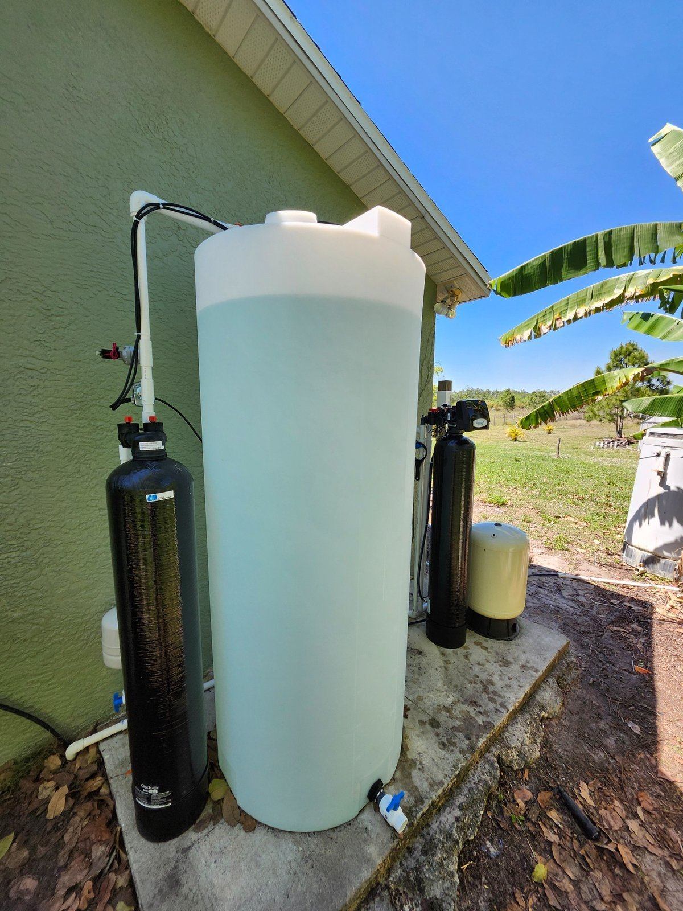
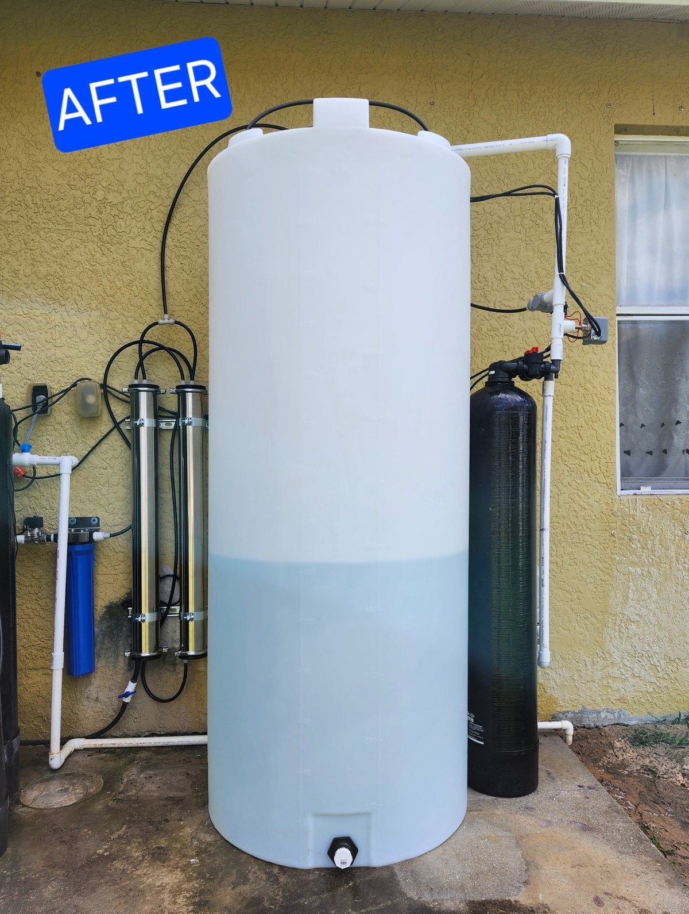
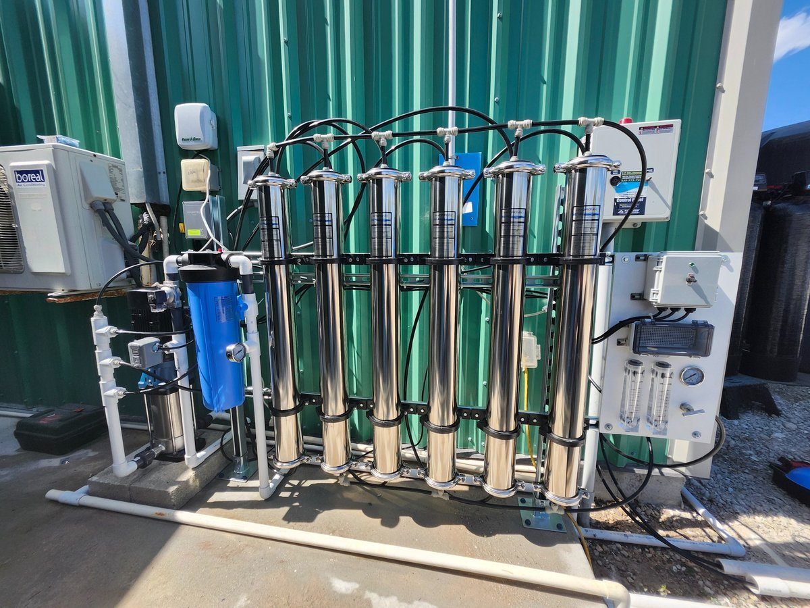
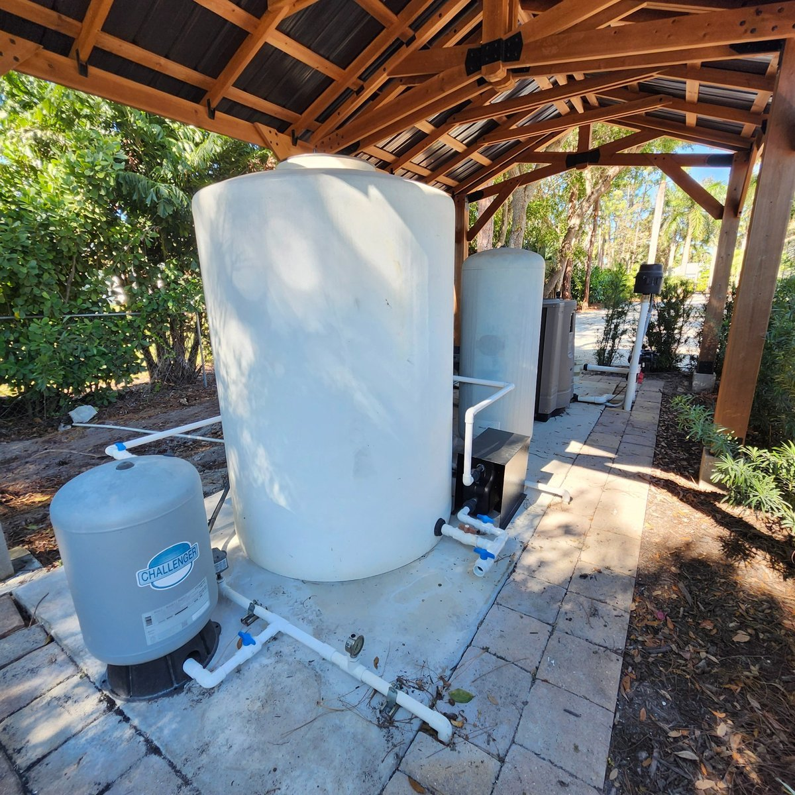
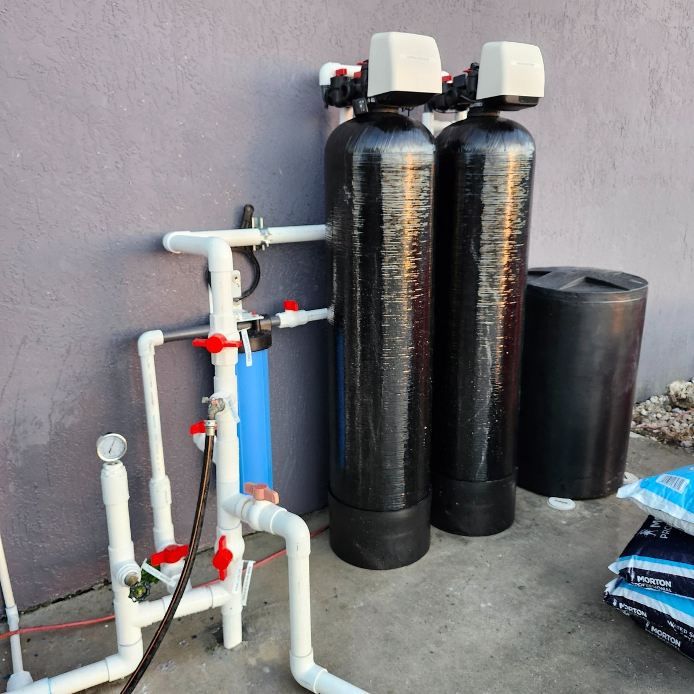
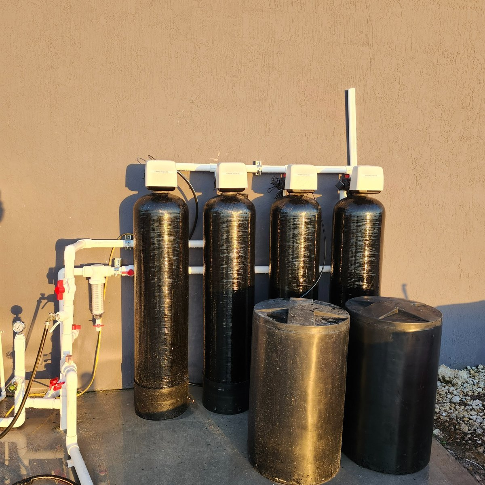
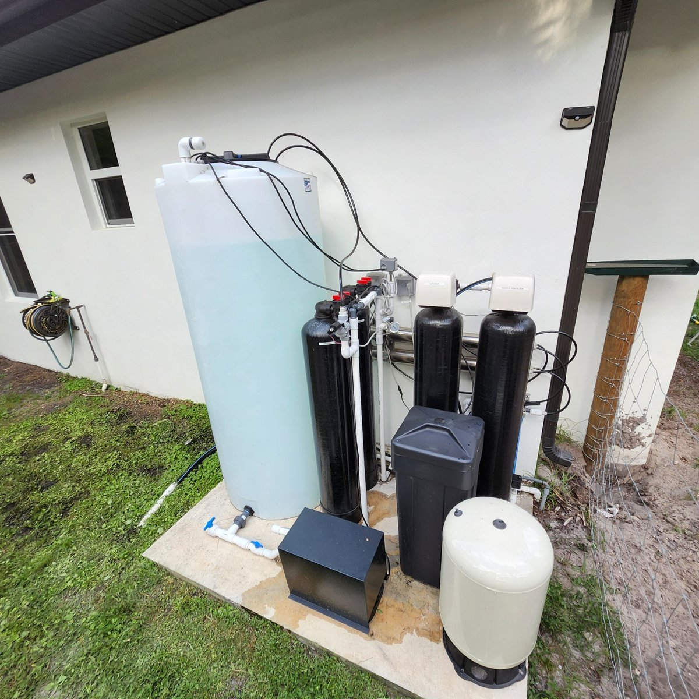
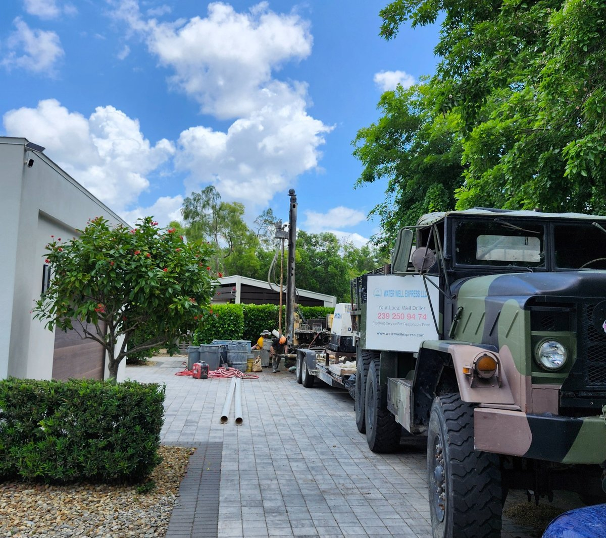

Welcome to Patriarch Water Works
We provide top-quality water treatment solutions for homes and businesses throughout Florida. From reverse osmosis and softener systems to well pumps and filtration, we deliver with honesty, expertise, and reliability.
Recent Projects







